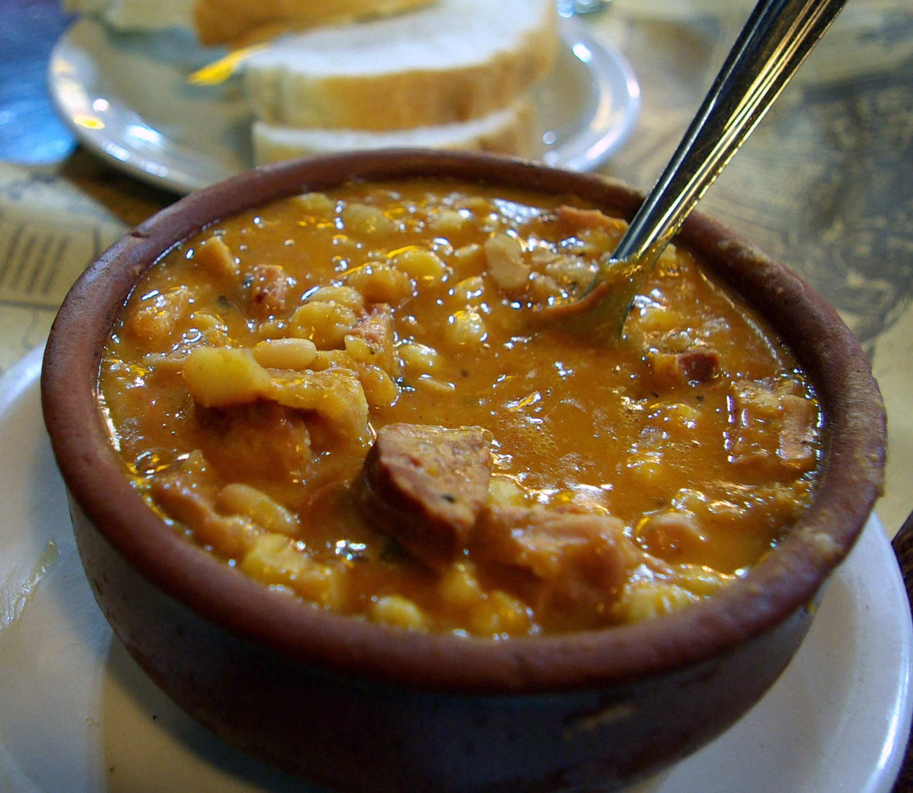

Locro

Locro, Argentines first choice to celebrate Revolution's day.
If there is no Locro on May 25th, then you are not considered Argentinian
Hot meal combining white corn, beans, pumpkin, chorizo and meat.
Ingredients
- White corn
- White beans
- Chorizo
- Meat
- One onion
- Half pumpkin
- (Optional) Bacon
- A lot of Water
- One cup of corn oil
- Ground chili
- Ground paprika
Steps
- Soak the beans and corn 24 hs before starting the preparation
- Cut all ingredients in cubes
- Cook in a saucepan or casserole the beans, corn, pumpkin and onion with 2 litres of water, mixing with a wood spoon every 15 minutes
- After 1 hour, add the meats
- Hot sauce Chop the onion and cook it in a pan with the oil at low temperature
- Add 2 spoons of ground paprika and 2 spoons of ground chili to the sauce. Mix and cook for 5 minutes
- Serve hot in crockpots
- Celebrate Revolution's day
Back